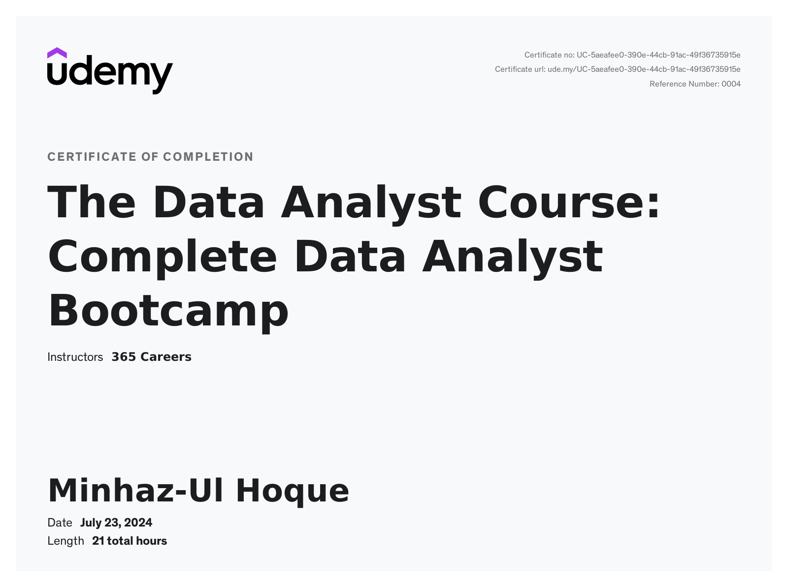
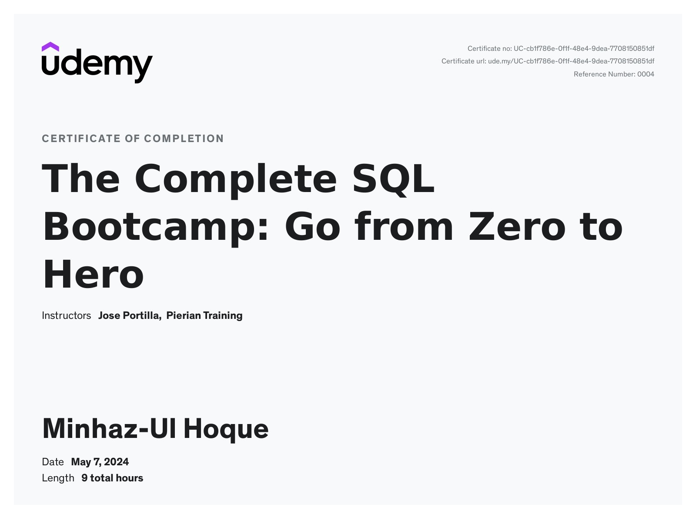
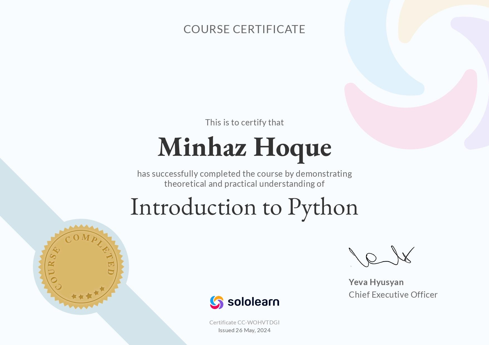
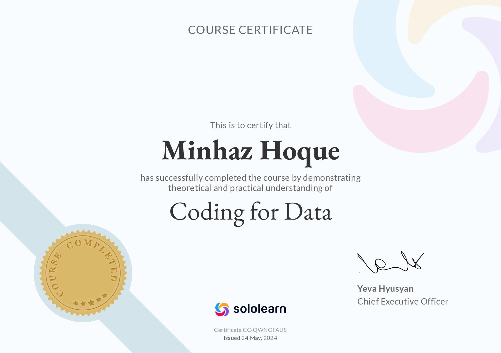
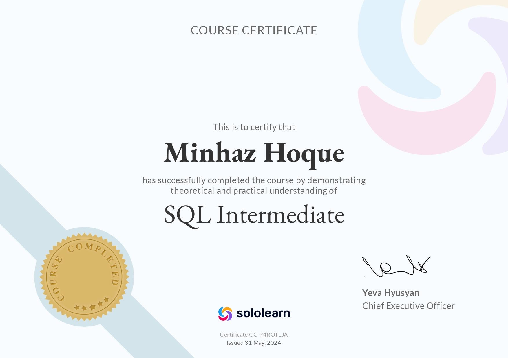

I completed a data analyst course that focused on bridging the gap between academic training and real-world job skills. The course covered essential topics such as data cleaning, preprocessing, and visualization using Python, NumPy, and Pandas. I learned to work with raw data, collect data from APIs, and create meaningful visualizations. The hands-on approach included practical exercises and a final project, ensuring a thorough understanding of data analytics and preparing me for real-world tasks. This comprehensive training equipped me with the skills needed to excel as a data analyst.

I completed a comprehensive SQL course where I learned to read and write complex queries using PostgreSQL, with skills applicable to other major SQL databases such as MySQL and Microsoft SQL Server. The course covered fundamental SQL syntax, advanced queries, aggregate functions, and logical operators. I also gained experience in creating tables and databases, as well as using Python to further advance my SQL skills. The interactive course provided hands-on experience with real-world challenges, significantly enhancing my proficiency in SQL for data analysis and business intelligence.

In the Introduction to Python course, I built a strong foundation in programming with Python. The course began with essential topics like writing code, memory management, and working with variables, followed by handling text and numerical data. I explored debugging techniques, standards, and best practices to write clean, efficient code. Practical exercises included developing a chatbot and a messaging app. I also learned about data types, type checking, and data conversion, alongside control flow constructs such as loops and conditional statements. The course concluded with a focus on lists, functions, and custom functions, equipping me with the skills to solve real-world problems and implement functional programming concepts.

In the Python Intermediate course, I expanded my programming skills by exploring advanced concepts and techniques. The course covered tuples, sets, and dictionaries, including how to work with these data structures effectively. It introduced list comprehensions for more concise code and detailed error handling with exceptions. Functional programming was another key focus, with lessons on lambda expressions, map and filter functions, and decorators. The course also delved into object-oriented programming, including inheritance, data hiding, and methods. This training enhanced my ability to write more efficient and organized Python code, preparing me for more complex programming challenges.

In the Coding for Data course, I acquired essential skills in both Python programming and SQL. The course covered fundamental Python concepts, including variables, data types, control flow, and functions. It also delved into more advanced topics such as debugging, applying best practices, and handling different data types. On the SQL side, I learned to execute queries, work with relational databases, and perform data analysis through sorting, filtering, and pattern matching. This course provided a comprehensive foundation in coding for data analysis, preparing me to effectively handle and manipulate data in real-world scenarios.

In the SQL Intermediate course, I deepened my understanding of data manipulation and querying techniques. The course began with string functions, mathematical operations, and aggregate functions, followed by a comprehensive look at the CASE statement for conditional logic. It covered essential table constraints, including identity columns, primary and foreign keys, and unique constraints to enforce data integrity. Additionally, I learned to work with multiple tables using various join types and the UNION operator to combine results. The course culminated in applying these skills to real-world queries, such as calculating averages and handling complex data relationships.